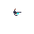
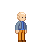
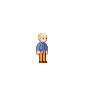
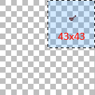
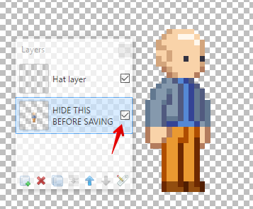

Multiplayer compatible custom hats!
You can use the below sample images if you want to create your own hat. For existing assets, you'll most likely want to crop to the top right 43x43 pixels.
   For Paint.NET users, this project file can be used to easily create hats. Make sure you hide the character layer before saving the hat, and that you select the PNG file format!
